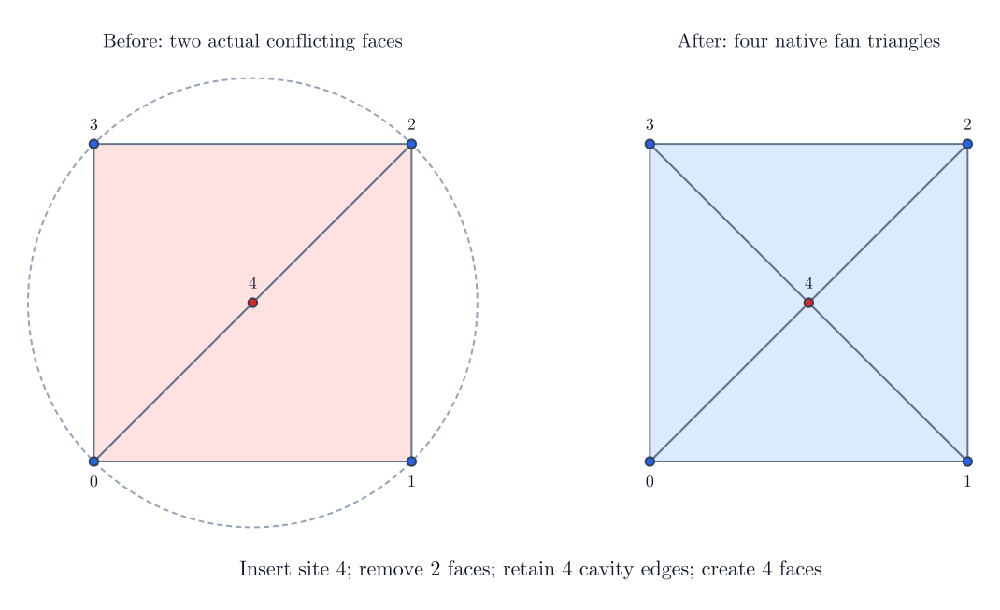
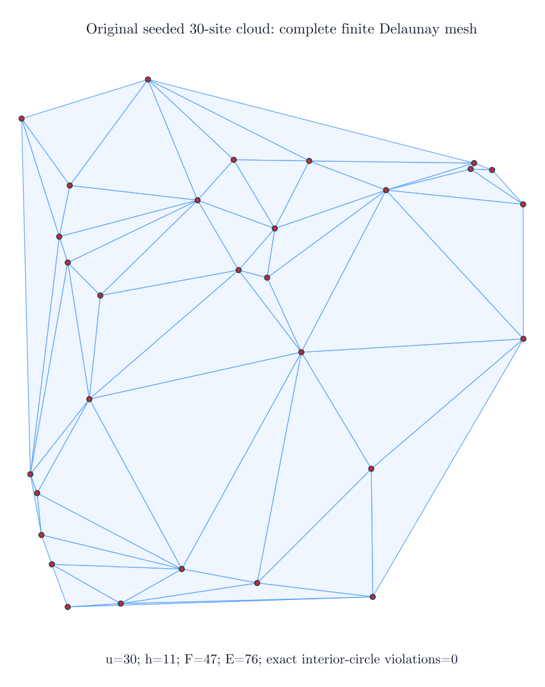
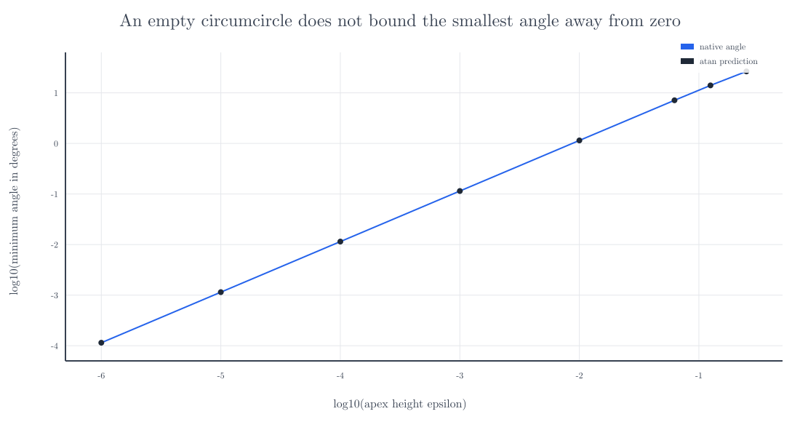
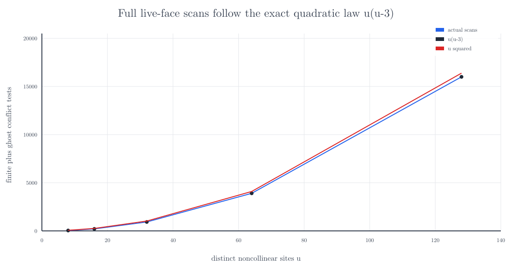

Delaunay Triangulation: Exact Circles, Actual Cavities and Unavoidable Thin Triangles
Abstract
Triangulating planar sites means covering their convex hull with noncrossing triangles whose vertices are the supplied points. Delaunay triangulation adds the requirement that no other site lie strictly inside any triangle's circumcircle. We begin with the original square-plus-centre and show the actual cavity removed when its centre is inserted. The original seeded 30-point cloud follows, with complete topology counts and exact circle queries. A narrow three-point counterexample corrects both a missing-face bug in the finite-super-triangle implementation and the report's claim that Delaunay triangles cannot be thin. The replacement uses a symbolic hull boundary and exact determinant signs for stored binary64 coordinates. Measured insertion scans, independent rational controls and explicit resource limits distinguish logical correctness from floating angle diagnostics.
Insert the square's centre into the actual cavity
The original sites are (0,0), (4,0), (4,4), (0,4) and (2,2), with input ids zero through four. Before the centre is inserted, the square has two triangles. Its four corners lie on (x−2)²+(y−2)²=8, so the centre lies strictly inside both circumcircles. The native trace records those two removed faces, their four nonshared boundary edges, and the four new fan triangles. The left panel draws the actual removed faces and this known square circle; the right draws the native final mesh. Ghost boundary records never appear as invented geometric coordinates.
#include <dm/dm.hpp>
int main() {
std::filesystem::create_directories("build");
const std::vector<dm::geometry::Point2D> p{{0,0},{4,0},{4,4},{0,4},{2,2}};
const auto t=dm::geometry::delaunay_trace(p);const auto& e=t.steps.back();const auto a=dm::geometry::delaunay_analyze(p,t.triangles);
if(e.input_index!=4 || e.removed.size()!=2 || e.boundary.size()!=4 || t.triangles.size()!=4 || a.interior_violations)return 1;
dm::graphics::Diagram d(85,1100);dm::graphics::DiagramStroke line;line.color={100,116,139};line.width=2;
dm::graphics::DiagramStroke circle;circle.color={148,163,184};circle.width=2;circle.dashed=true;
d.ellipse({2,2},std::sqrt(8.),std::sqrt(8.),{255,255,255,0},circle);
const std::vector<std::vector<dm::geometry::Triangle>> panels{e.removed,t.triangles};
for(std::size_t k=0;k<panels.size();++k) {
const double shift=7.*k;
for(const auto f:panels[k]) {
if(f.c>=p.size())return 1;
d.polygon({{p[f.a].x+shift,p[f.a].y},{p[f.b].x+shift,p[f.b].y},{p[f.c].x+shift,p[f.c].y}},k?dm::graphics::RGB{219,234,254}:dm::graphics::RGB{254,226,226},line);
}
for(std::size_t i=0;i<p.size();++i) {
const auto color=i==4?dm::graphics::RGB{220,38,38}:dm::graphics::RGB{37,99,235};
d.ellipse({p[i].x+shift,p[i].y},.055,.055,color).text({p[i].x+shift,p[i].y+(i<2?-.25:.25)},std::format("{}",i),18);
}
}
d.text({2,5.3},"Before: two actual conflicting faces",21).text({9,5.3},"After: four native fan triangles",21)
.text({5.5,-1.35},std::format("Insert site {}; remove {} faces; retain {} cavity edges; create {} faces",e.input_index,e.removed.size(),e.boundary.size(),e.added.size()),22)
.save_svg("build/delaunay_cavity.svg");
std::print("| original fan face | exact orientation sign | other-site circle queries |\n| :--- | ---: | ---: |\n");
for(const auto f:t.triangles)std::print("| ({},{},{}) | {} | {} |\n",f.a,f.b,f.c,dm::geometry::orientation_sign(p[f.a],p[f.b],p[f.c]),p.size()-3);
std::print("\nSquare control: u={}, boundary h={}, edges={}, triangles={}, Euler prediction={}, exact circle tests={}, interior violations={}.\n",a.distinct_points,a.boundary_edges,a.edges,a.triangles,2*a.distinct_points-2-a.boundary_edges,a.circle_tests,a.interior_violations);
std::print("Centre cavity: input {}, live faces before {}, after {}; removed {}, boundary {}, added {}.\n",e.input_index,e.faces_before,e.faces_after,e.removed.size(),e.boundary.size(),e.added.size());
}| original fan face | exact orientation sign | other-site circle queries |
|---|---|---|
| (0,1,4) | 1 | 2 |
| (0,4,3) | 1 | 2 |
| (1,2,4) | 1 | 2 |
| (2,3,4) | 1 | 2 |
Square control: u=5, boundary h=4, edges=8, triangles=4, Euler prediction=4, exact circle tests=8, interior violations=0. Centre cavity: input 4, live faces before 6, after 8; removed 2, boundary 4, added 4.

Circle signs, cavity replacement and the symbolic boundary
For counterclockwise a,b,c, the orientation-sensitive determinant
is positive for d strictly inside the circumcircle, negative outside and zero on it. Reversing a,b,c reverses the sign. The circle interpretation requires a noncollinear first triple. Lifting each point to z=x²+y² turns the circle test into a side-of-plane test; subtracting the circle's linear plane from the lift gives the sign relation. Computing a centre and radius by division is unnecessary for this topological decision.
Bowyer–Watson insertion removes every conflicting finite triangle and replaces its cavity by triangles joining the new site to the nonshared boundary edges. Edges occurring twice are internal to the cavity and cancel; edges occurring once bound it. The geometric cavity argument preserves a planar Delaunay triangulation when the initial boundary and sign decisions are valid. No strictly interior point is allowed, while points exactly on a circumcircle are permitted. The implementation retains existing finite faces on exact cocircular ties, so the same input order is deterministic but another order may select another valid diagonal.
A finite enclosing triangle is an unreliable initialization: containing all sites does not ensure that its vertices lie outside all circles that matter. Narrow triples can have arbitrarily large circumcircles relative to their bounding box. The former twenty-extent super-triangle returned no face for the three noncollinear sites (0,0), (1,0), (0.5,0.000001). This failure was reproduced before replacing the code; the native example below now returns its one required face.
The replacement begins with a real noncollinear seed and three symbolic faces outside its hull edges. A ghost stores a reversed finite hull edge and an infinity marker, with no fabricated coordinates. Its conflict test is the exact exterior half-plane test; a point exactly between the edge's endpoints conflicts too, allowing boundary-edge insertion without a zero- area face. Cavity replacement handles finite and ghost faces uniformly, rotating a new ghost so its marker stays last. Final output discards ghosts. The analogous symbolic-boundary design already present in the repository's CAD triangulator motivates this initialization; CAD implementation and public geometry API remain separate callers.
Finite validation precedes even empty results or resource caps. Equal coordinates, including signed zeros, coalesce to the earliest original id; output references those original indices. All-collinear or fewer than three distinct sites have no two-dimensional triangulation. Final finite faces are strictly CCW, rotated to their smallest id and sorted. These ordering and degeneracy rules are explicit rather than consequences of hash traversal.
Retain the original seeded cloud and check its counts
The native cloud generator keeps the original mt19937 seed 20250728, thirty records, square extent ten, and x-then-y uniform draws. The distribution implementation can vary across C++ libraries, so this seed identifies a reproducible control within the same toolchain rather than universal point bytes. The core generator replaces report-local sampling code.
For u distinct noncollinear sites and h sites on the convex-hull boundary, including sites collinear along hull edges, a complete planar triangulation satisfies
The first identity omits the exterior face. Every boundary edge is counted once among triangle sides, every interior edge twice. These relations assume coverage, nonoverlap and use of all distinct sites; matching a count alone does not establish those assumptions. The native analysis also counts used sites and checks every nonvertex distinct site against every supplied face's exact circle. It validates indices, CCW orientation, duplicate faces and edge multiplicity, but does not certify the global embedding of an arbitrary supplied mesh. Independent tests cover that additional geometry. The figure uses equal geometric scales; floating minimum angle is only a summary, never an input to a topological decision.
#include <dm/dm.hpp>
int main() {
std::filesystem::create_directories("build");
const auto p=dm::geometry::delaunay_uniform_cloud(30);const auto t=dm::geometry::delaunay_trace(p);const auto a=dm::geometry::delaunay_analyze(p,t.triangles);
const auto predicted=2*a.distinct_points-2-a.boundary_edges;
if(a.distinct_points!=30 || a.used_points!=30 || t.triangles.size()!=predicted || a.interior_violations)return 1;
dm::graphics::Diagram d(85,1100);dm::graphics::DiagramStroke edge;edge.color={96,165,250};edge.width=1.2;
for(const auto f:t.triangles)d.polygon({{p[f.a].x,p[f.a].y},{p[f.b].x,p[f.b].y},{p[f.c].x,p[f.c].y}},{239,246,255},edge);
for(const auto& q:p)d.ellipse({q.x,q.y},.045,.045,{220,38,38});
d.text({5,10.8},"Original seeded 30-site cloud: complete finite Delaunay mesh",23)
.text({5,-.8},std::format("u={}; h={}; F={}; E={}; exact interior-circle violations={}",a.distinct_points,a.boundary_edges,a.triangles,a.edges,a.interior_violations),21)
.save_svg("build/delaunay.svg");
std::print("| records | distinct sites | used sites | boundary h | edges E | faces F | predicted F | exact circle queries | interior violations | min angle (degrees) |\n| ---: | ---: | ---: | ---: | ---: | ---: | ---: | ---: | ---: | ---: |\n");
std::print("| {} | {} | {} | {} | {} | {} | {} | {} | {} | {:.6f} |\n",p.size(),a.distinct_points,a.used_points,a.boundary_edges,a.edges,a.triangles,predicted,a.circle_tests,a.interior_violations,a.minimum_angle_degrees);
std::print("\nActual solver conflict scans: {} finite incircle tests + {} ghost half-plane tests = {}.\n",t.work.incircle_tests,t.work.hull_side_tests,t.work.incircle_tests+t.work.hull_side_tests);
}| records | distinct sites | used sites | boundary h | edges E | faces F | predicted F | exact circle queries | interior violations | min angle (degrees) |
|---|---|---|---|---|---|---|---|---|---|
| 30 | 30 | 30 | 11 | 76 | 47 | 47 | 1269 | 0 | 0.364812 |
Actual solver conflict scans: 593 finite incircle tests + 217 ghost half-plane tests = 810.

The reproduced cloud has 47 finite faces and eleven boundary sites, matching the count formula. Its measured smallest angle is only 0.364812 degrees. Thus even the original random control contains a very thin triangle despite all 1,269 exact circle queries reporting no interior violation.
Exact topology still permits arbitrarily thin triangles
A Delaunay triangulation maximizes the smallest angle among triangulations of a fixed planar site set, with ties possible. This does not supply a positive minimum-angle guarantee independent of the input. With only the three sites (0,0), (1,0), (1/2,ε), there is exactly one possible triangle. For 0<ε≤1/4 its smallest angle is atan(2ε), tending to zero with ε. Its circumcircle is empty of other sites because there are none. The resulting thin triangle is therefore Delaunay and unavoidable without modifying the sites or adding refinement points. This corrects the original claim that empty circumcircles explain the absence of thin triangles.
#include <dm/dm.hpp>
int main() {
std::filesystem::create_directories("build");
std::vector<double> log_height,log_angle,log_theory;
std::print("| apex height epsilon | finite faces | minimum angle (degrees) | atan(2 epsilon), degrees |\n| ---: | ---: | ---: | ---: |\n");
for(double h:{.25,.125,.0625,.01,.001,.0001,.00001,.000001}) {
const std::vector<dm::geometry::Point2D> p{{0,0},{1,0},{.5,h}};const auto f=dm::geometry::delaunay_triangulation(p);const auto a=dm::geometry::delaunay_analyze(p,f);
const double theory=std::atan(2*h)*180/std::acos(-1.);
if(f.size()!=1 || a.interior_violations || std::abs(a.minimum_angle_degrees-theory)>1e-10)return 1;
log_height.push_back(std::log10(h));log_angle.push_back(std::log10(a.minimum_angle_degrees));log_theory.push_back(std::log10(theory));
std::print("| {:.6g} | {} | {:.9g} | {:.9g} |\n",h,f.size(),a.minimum_angle_degrees,theory);
}
const double below=std::nextafter(1.,0.),above=std::nextafter(1.,2.),tiny=std::numeric_limits<double>::denorm_min(),big=std::numeric_limits<double>::max();
const int on=dm::geometry::incircle_sign({0,0},{1,0},{0,1},{1,1}),inside=dm::geometry::incircle_sign({0,0},{1,0},{0,1},{1,below}),outside=dm::geometry::incircle_sign({0,0},{1,0},{0,1},{1,above});
const int small=dm::geometry::incircle_sign({-tiny,0},{0,-tiny},{tiny,0},{0,0}),large=dm::geometry::incircle_sign({-big,0},{0,-big},{big,0},{0,0});
if(on!=0 || inside!=1 || outside!=-1 || small!=1 || large!=1)return 1;
std::print("\nExact binary64 circle signs: on {}, one-ULP inward {}, one-ULP outward {}; smallest-subnormal circle centre {}, largest-finite circle centre {}.\n",on,inside,outside,small,large);
auto plot=dm::graphics::RPlot::create();
plot.line(log_height,log_angle,"native angle",{37,99,235},2).points(log_height,log_theory,"atan prediction",{31,41,55},4)
.legend({"native angle","atan prediction"},{{37,99,235},{31,41,55}})
.title("An empty circumcircle does not bound the smallest angle away from zero")
.x_label("log10(apex height epsilon)").y_label("log10(minimum angle in degrees)")
.x_limits(-6.3,-.3).y_limits(-4.3,1.8).size(1100,580).save_svg("build/delaunay_angles.svg");
}| apex height epsilon | finite faces | minimum angle (degrees) | atan(2 epsilon), degrees |
|---|---|---|---|
| 0.25 | 1 | 26.5650512 | 26.5650512 |
| 0.125 | 1 | 14.0362435 | 14.0362435 |
| 0.0625 | 1 | 7.12501635 | 7.12501635 |
| 0.01 | 1 | 1.14576284 | 1.14576284 |
| 0.001 | 1 | 0.114591406 | 0.114591406 |
| 0.0001 | 1 | 0.0114591557 | 0.0114591557 |
| 1e-05 | 1 | 0.00114591559 | 0.00114591559 |
| 1e-06 | 1 | 0.000114591559 | 0.000114591559 |
Exact binary64 circle signs: on 0, one-ULP inward 1, one-ULP outward -1; smallest-subnormal circle centre 1, largest-finite circle centre 1.

The new incircle predicate expands the four-row determinant into 48 signed products of four decoded dyadic coordinates. Each product has at most 212 mantissa bits and a bounded exponent offset. In units of 2^−4296, the full sum needs at most 8,398 bits; each signed-magnitude accumulator provides 8,448 bits. Consequently no fixed-integer carry escapes, even for subnormal or largest-finite inputs. This is an exact sign for the supplied binary64 values, without tolerances, floating products or assumptions about long-double width. It is a different implementation from Shewchuk's adaptive floating expansions, while addressing the same determinant-sign problem. The orientation predicate already uses the corresponding bounded-dyadic method. Approximate minimum-angle calculations are separately scaled to avoid overflow and may return zero after extreme relative-scale loss; these diagnostics never decide the mesh topology.
Cocircular sites allow several Delaunay triangulations. The uncomplicated straight-line Voronoi dual interpretation is clearest in general position; with degeneracy, several circumcentres can coincide and the dual Delaunay cell need not itself be triangular. The existing Voronoi API's finite/unbounded cell conventions are unchanged. This report does not implement constrained boundaries, holes, Steiner refinement or quality meshing.
Actual quadratic conflict scans and complete limits
After k distinct noncollinear sites have been inserted, the finite faces number 2k−2−h and ghosts number h, leaving exactly 2k−2 live faces. Full scanning before each of the u−3 later insertions therefore performs
This count includes finite incircle and ghost half-plane calls. It excludes seed selection, new-face orientation checks, edge maps, trace copying and predicate-internal arithmetic. With ordered duplicate/cavity maps and full live scans, the implementation has the conservative worst-case bound O(n log(n+1)+u² log(u+1)), rather than a claim of a fast O(n log n) triangulator. The active mesh, working cavities and identity maps use O(n+u) storage. Complete trace events can add O(u²) storage over a whole run. The exact conflict count is a work invariant, not an elapsed-time benchmark.
The trace checks the complete original-record cap before allocation, the prospective full-scan cumulative conflict cap before each scan, and the retained event-entry cap before retaining an insertion. One event entry is charged for the insertion plus each removed face, boundary edge and added face, including ghosts. Temporary cavities, input/maps and final output are not included in that history count. Analysis separately caps every prospective face/nonvertex-site circle query. Zero disables only an optional cap, while arithmetic/capacity checks remain. Failures return no partial triangulation.
#include <dm/dm.hpp>
int main() {
std::filesystem::create_directories("build");
std::vector<double> size,actual,predicted,square;
std::print("| distinct sites u | finite faces | hull boundary h | finite circle tests | ghost side tests | total conflict tests | u(u-3) |\n| ---: | ---: | ---: | ---: | ---: | ---: | ---: |\n");
for(std::size_t n:{8,16,32,64,128}) {
const auto t=dm::geometry::delaunay_trace(dm::geometry::delaunay_uniform_cloud(n,1981));const auto a=dm::geometry::delaunay_analyze(t.points,t.triangles);const auto tests=t.work.incircle_tests+t.work.hull_side_tests;
if(a.used_points!=n || a.interior_violations || a.triangles!=2*n-2-a.boundary_edges || tests!=n*(n-3))return 1;
size.push_back(n);actual.push_back(tests);predicted.push_back(n*(n-3));square.push_back(n*n);
std::print("| {} | {} | {} | {} | {} | {} | {} |\n",n,a.triangles,a.boundary_edges,t.work.incircle_tests,t.work.hull_side_tests,tests,n*(n-3));
}
const std::vector<dm::geometry::Point2D> p{{0,0},{4,0},{4,4},{0,4},{2,2}};const auto t=dm::geometry::delaunay_trace(p);std::size_t entries=0;for(const auto& e:t.steps)entries+=1+e.removed.size()+e.boundary.size()+e.added.size();int rejected=0;
try{(void)dm::geometry::delaunay_trace(p,4,10,entries);}catch(const std::length_error&){++rejected;}
try{(void)dm::geometry::delaunay_trace(p,5,9,entries);}catch(const std::length_error&){++rejected;}
try{(void)dm::geometry::delaunay_trace(p,5,10,entries-1);}catch(const std::length_error&){++rejected;}
try{(void)dm::geometry::delaunay_analyze(p,t.triangles,7);}catch(const std::length_error&){++rejected;}
try{(void)dm::geometry::delaunay_triangulation({{std::numeric_limits<double>::quiet_NaN(),0}});}catch(const std::invalid_argument&){++rejected;}
const auto exact=dm::geometry::delaunay_trace(p,5,10,entries),disabled=dm::geometry::delaunay_trace(p,0,0,0);
const auto duplicated=dm::geometry::delaunay_trace({{0,0},{1,0},{0,1},{0,0}}),line=dm::geometry::delaunay_trace({{0,0},{1,0},{2,0}});
if(rejected!=5 || exact.triangles.size()!=4 || disabled.triangles.size()!=4 || duplicated.representative_for_input.back()!=0 || line.has_seed)return 1;
std::print("\nFive expected rejections: original-record cap, complete scan cap, event-entry cap, complete analysis cap, nonfinite short input. Count {}. Exact fan limits: records 5, conflicts 10, entries {}; all succeed, as do zero-disabled optional caps.\n",rejected,entries);
std::print("Duplicate control: {} distinct sites, duplicate maps to original id {}, faces {}. Collinear control: has seed {}, faces {}.\n",duplicated.representatives.size(),duplicated.representative_for_input.back(),duplicated.triangles.size(),line.has_seed,line.triangles.size());
auto plot=dm::graphics::RPlot::create();
plot.line(size,actual,"actual scans",{37,99,235},2).points(size,predicted,"u(u-3)",{31,41,55},4).line(size,square,"u squared",{220,38,38},2)
.legend({"actual scans","u(u-3)","u squared"},{{37,99,235},{31,41,55},{220,38,38}})
.title("Full live-face scans follow the exact quadratic law u(u-3)")
.x_label("distinct noncollinear sites u").y_label("finite plus ghost conflict tests")
.x_limits(0,140).y_limits(0,20500).size(1100,580).save_svg("build/delaunay_work.svg");
}| distinct sites u | finite faces | hull boundary h | finite circle tests | ghost side tests | total conflict tests | u(u-3) |
|---|---|---|---|---|---|---|
| 8 | 7 | 7 | 16 | 24 | 40 | 40 |
| 16 | 21 | 9 | 117 | 91 | 208 | 208 |
| 32 | 53 | 9 | 689 | 239 | 928 | 928 |
| 64 | 113 | 13 | 3312 | 592 | 3904 | 3904 |
| 128 | 242 | 12 | 14596 | 1404 | 16000 | 16000 |
Five expected rejections: original-record cap, complete scan cap, event-entry cap, complete analysis cap, nonfinite short input. Count 5. Exact fan limits: records 5, conflicts 10, entries 19; all succeed, as do zero-disabled optional caps. Duplicate control: 3 distinct sites, duplicate maps to original id 0, faces 1. Collinear control: has seed false, faces 0.

Verification and scope
Nine new native tests pass AddressSanitizer and UndefinedBehaviorSanitizer. All 512 subsets of a 3×3 integer grid, in forward and reverse input order, and 250 seeded integer point sets are checked with independent signed-128-bit orientation/incircle arithmetic. Their checks include every used site, noncrossing edges, exact hull/face area equality, boundary sites including collinear hull points, Euler counts, CCW faces and every nonvertex circle query. Separate actual-event replay checks removed faces, directed boundary cancellation, replacements, live counts and accumulated work. All square permutations, duplicate/signed-zero identities, collinear and edge-insertion cases, ownership, invalid meshes, complete caps and the narrow regression pass. Mixed largest-finite/subnormal cases exercise topology without floating coordinate products. The predicate also agrees with an independent Python Fraction translated-determinant oracle on 6,000 random full-range binary64 quadruples and 4,000 cocircular or one-ULP-perturbed controls. That optional development oracle is separate from report execution; every report input, solver, measurement and figure is native C++.
Existing Delaunay, Voronoi, jump-and-walk, finite-element and geometry-format suites check consumers of the same public API. These checks distinguish an exact local circle property from proof of an arbitrary mesh's global embedding. The solver supplies an unconstrained triangulation of the sites' convex hull, with deterministic degeneracy rules and complete results. Uniform square clouds demonstrate its behavior; they do not establish universal mesh quality or justify an external dataset for this geometric study. Any fixed positive minimum-angle target requires additional input assumptions or refinement beyond this API.
References
- Adrian Bowyer (1981), Computing Dirichlet tessellations, The Computer Journal 24(2), 162–166. [Original paper DOI](https://doi.org/10.1093/comjnl/24.2.162).
- David F. Watson (1981), Computing the n-dimensional Delaunay tessellation with application to Voronoi polytopes, The Computer Journal 24(2), 167–172. [Original paper DOI](https://doi.org/10.1093/comjnl/24.2.167). This core uses the cavity-insertion idea with symbolic boundary faces, exact decoded-dyadic signs and earliest duplicate identities.
- Jonathan R. Shewchuk (1997), Adaptive Precision Floating-Point Arithmetic and Fast Robust Geometric Predicates, Discrete & Computational Geometry 18, 305–363. [Author's paper and predicate resources](https://www.cs.cmu.edu/~quake/robust.html). The determinant-sign motivation applies here; the fixed-integer implementation is distinct from the adaptive-expansion method.
- Jonathan R. Shewchuk, [Triangle quality meshing](https://www.cs.cmu.edu/~quake/triangle.quality.html) and [Delaunay triangulations](https://www.cs.cmu.edu/~quake/triangle.delaunay.html). Unconstrained triangulation, constrained boundaries and quality refinement are separate capabilities.